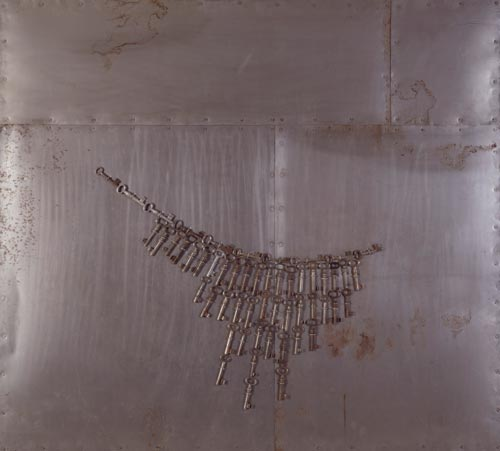

Details
Vernissage: 28. September 2001
Einführung: Dr. Karl Irsigler (Museum moderner Kunst der Stiftung Ludwig Wien)
Die Ausstellung war bis 30. November 2001 zu besichtigen.

Vernissage: 28. September 2001
Einführung: Dr. Karl Irsigler (Museum moderner Kunst der Stiftung Ludwig Wien)
Die Ausstellung war bis 30. November 2001 zu besichtigen.